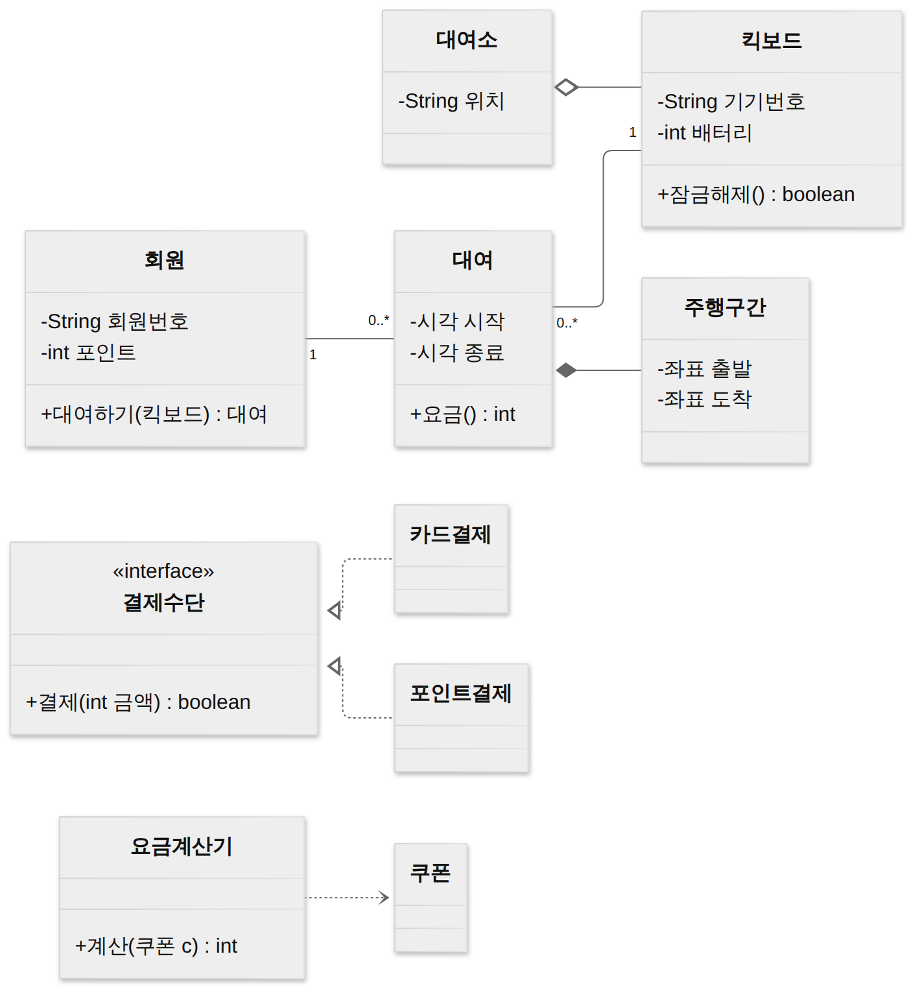

R02 · UML ① — 무엇으로 그리고, 어떻게 잇나
1과목 리뉴얼A1 리뉴얼 둘째 장은 책 1.1.2 UML이에요. 어제(R01)는 요구를 문장과 DFD로 정리했다면, 오늘은 같은 요구를 객체의 눈으로 그리는 표준 그림 언어를 배워요. UML은 분량이 많아서 두 장으로 나눠요. 오늘은 UML이 무엇으로 이루어졌는지(구성요소), 다이어그램을 어떻게 나누는지(분류), 시스템의 뼈대를 그리는 구조 다이어그램 6종, 그중 가장 자주 쓰는 클래스 다이어그램, 클래스끼리 잇는 관계 6종, 그리고 스테레오타입까지 가요. 유스케이스·시퀀스·상태·활동 같은 행위 다이어그램은 다음 장 R03에서 자세히 다뤄요. 오늘의 공통 사례는 공유 킥보드 대여 앱 ‘씽씽’이에요.
- UML의 정의와 특징 4가지(가시화·구축·명세화·문서화)를 말하고, ‘구축 언어 = 코드 변환·역공학’을 구별할 수 있다
- UML 구성요소 3가지(사물·관계·다이어그램)와 사물 4종(구조·행동·그룹·주해)을 예시로 구별하고, 가짜 구성요소(Terminal)를 가려낼 수 있다
- 구조(정적) 다이어그램 6종과 행위(동적) 다이어그램 7종을 나누고, “타이밍·순차·상태는 정적이 아니다” 같은 선지를 판정할 수 있다
- 클래스 다이어그램의 이름·속성·연산 칸과 접근 제어자
+ - # ~를 읽을 수 있다 - 관계 6종(연관·의존·일반화·실체화·합성·집합)의 뜻·선 모양·끝 모양을 구별하고, 스테레오타입 표기
<< >>를 고를 수 있다
⓪ 큰 그림 — 요구분석 다음, 설계 앞
R01에서 본 것처럼 분석 기법은 두 갈래예요. 데이터가 처리를 거쳐 흐르는 모습을 보는 구조적 분석(DFD·자료 사전)과, 데이터와 그 데이터를 다루는 기능을 객체로 묶어 보는 객체 지향 분석이죠. UML은 뒤쪽 갈래의 공용 도구예요. 분석 단계에서 “어떤 객체가 있고 서로 어떻게 엮이나”를 그리고, 그 그림이 그대로 설계(R10·R11의 객체 지향 설계·디자인 패턴)로 넘어가요.
UML을 처음 보면 상자와 화살표가 잔뜩이라 겁이 나지만, 사실은 IKEA 조립 설명서 같은 물건이에요. 스웨덴어를 몰라도 그림만 보고 책장을 조립하듯, 기획자·개발자·외주 업체가 서로 쓰는 언어(Java든 Kotlin이든)가 달라도 같은 그림을 보고 같은 시스템을 떠올리게 하려고 만든 약속이에요.
① UML이란 기출 19회
정의: UML(Unified Modeling Language, 통합 모델링 언어)은 객체 지향 소프트웨어를 개발할 때 산출물을 명세화·시각화·문서화하기 위해 쓰는 표준화된 범용 모델링 언어예요. ‘언어’라고 부르지만 코드를 쓰는 언어가 아니라, 정해진 기호(상자·선·화살표)와 그 기호를 잇는 문법을 가진 그림 언어예요.
왜 생겼나: 1990년대 초에는 객체 지향 방법론이 수십 가지였고, 방법론마다 클래스를 그리는 모양조차 달랐어요. 대표 주자가 부치(Booch)의 방법, 럼바우(Rumbaugh)의 OMT, 야콥슨(Jacobson)의 OOSE였는데, 같은 회사 안에서도 팀마다 다른 기호를 써서 그림을 서로 못 읽는 일이 생겼죠. 세 사람이 각자의 표기법을 합쳐 하나의 언어로 만든 것이 UML이고, 이후 표준 단체 OMG(Object Management Group)가 국제 표준으로 관리하고 있어요. 이름의 Unified(통합)가 바로 이 ‘여러 표기법의 통합’이에요.
특징 4가지: UML은 네 가지 성격을 가진 언어라고 정리해요. 씽씽 앱 하나로 각각을 붙여 보면 이래요.
가시화 언어 — 머릿속 생각을 눈에 보이는 그림으로 꺼내요. “대여 한 건에 킥보드는 하나”라는 생각을 그림으로 그리면, 회의에서 “어? 두 대 같이 빌리는 단체 대여는?”이라는 질문이 바로 나와요. 그림이 있으니 오해가 줄고 의사소통이 쉬워져요.
구축 언어 — UML로 그린 모델을 실제 프로그래밍 언어 코드로 변환할 수 있고, 거꾸로 이미 있는 코드를 읽어 UML 그림으로 되돌리는 역공학(Reverse Engineering)도 할 수 있어요. 클래스 다이어그램을 넣으면 Java 클래스 뼈대가 나오고, 남이 짜 놓은 레거시 코드를 넣으면 클래스 다이어그램이 나오는 도구들이 이 성질을 이용해요.
명세화 언어 — 분석·설계·구현 단계마다 필요한 모델을 정확하고 완전하게 적을 수 있어요. 말로 “회원은 킥보드를 빌릴 수 있다”라고 쓰면 몇 대까지인지 모호하지만, UML에서는 다중도 1, 0..*처럼 숫자로 못 박아요.
문서화 언어 — 그린 그림이 곧 시스템의 문서가 돼요. 요구사항·아키텍처·설계를 문서로 남겨서, 나중에 평가하거나 새로 들어온 사람과 의사소통할 때 그대로 꺼내 써요.
| 특징 | 한 줄 뜻 | 씽씽 장면 |
|---|---|---|
| 가시화 | 생각을 그림으로, 오해 감소 | 대여 그림을 보자 단체 대여 질문이 나옴 |
| 구축 | 모델 → 코드 변환, 코드 → 모델 역공학 | 클래스 그림에서 Java 뼈대 생성 |
| 명세화 | 정확·완전한 모델 기술 | 다중도 1 대 0..*로 못 박기 |
| 문서화 | 평가·의사소통용 문서 | 신입 개발자 온보딩 자료 |
구축 언어가 무슨 뜻인지 코드로 보면 확실해요. 아래 클래스 그림(⑤에서 자세히 봐요)을 도구에 넣으면 이런 뼈대가 생기고, 반대로 이 코드를 넣으면 같은 그림이 나와요.
// «interface» 결제수단 ← 카드결제 (실체화)
interface PaymentMethod { boolean pay(int amount); }
class CardPayment implements PaymentMethod {
private String cardNo; // - cardNo : String
public boolean pay(int amount) { ... } // + pay(amount) : boolean
}② 구성요소 3가지와 사물 4종
정의: UML은 사물(Things), 관계(Relationships), 다이어그램(Diagrams) 세 가지로 이루어져요. 국어 문법에 빗대면 쉬워요. 사물은 문장의 명사·동사처럼 모델을 이루는 기본 대상이고, 관계는 형용사·부사처럼 사물과 사물을 이어 그 의미를 넓혀 주며, 다이어그램은 사물과 관계를 모아 하나의 그림으로 완성한 문장이에요. “회원(사물)이 킥보드(사물)를 빌린다(관계)”를 그림 한 장으로 그리면 그게 다이어그램이죠.
사물 4종: 사물은 다시 네 종류로 나눠요.
구조 사물(Structural Things)은 시스템의 정적인 부분, 즉 “무엇이 있나”를 나타내요. 클래스, 유스케이스, 컴포넌트, 노드(실행 장치)가 여기 들어가요. 씽씽에서는 킥보드 클래스, ‘킥보드 대여하기’ 유스케이스, ‘결제 모듈’ 컴포넌트, ‘API 서버’ 노드가 모두 구조 사물이에요.
행동 사물(Behavioral Things)은 시간과 공간에 따라 변하는 동적인 부분, 즉 “어떻게 움직이나”를 나타내요. 객체들이 메시지를 주고받는 상호작용(Interaction)과, 한 객체가 겪는 상태 변화를 담은 상태 머신(State Machine)이 대표예요. 킥보드가 ‘대기 → 대여 중 → 반납 처리 → 대기’로 바뀌는 흐름이 상태 머신이에요.
그룹 사물(Grouping Things)은 요소들을 묶는 상자예요. 대표가 패키지(Package)로, 씽씽의 결제 관련 클래스를 ‘결제’ 패키지 하나로 묶는 식이에요.
주해 사물(Annotation Things)은 부가 설명이나 제약 조건을 다는 노트(Note)예요. 모서리가 접힌 종이 모양으로 그리고, 그림 어디든 붙일 수 있어요. 냉장고에 붙인 포스트잇처럼 “배터리 20% 미만 킥보드는 대여 목록에서 숨김” 같은 메모를 붙이는 용도예요.
| 사물 | 무엇을 나타내나 | 대표 예 | 씽씽 예 |
|---|---|---|---|
| 구조 | 정적 부분(무엇이 있나) | 클래스·유스케이스·컴포넌트·노드 | 킥보드 클래스, API 서버 노드 |
| 행동 | 동적 부분(어떻게 움직이나) | 상호작용·상태 머신 | 대기 → 대여 중 → 반납 |
| 그룹 | 요소 묶음 | 패키지 | 결제 패키지 |
| 주해 | 부가 설명·제약 | 노트 | “배터리 20% 미만 숨김” |
③ 다이어그램 분류 — 사진(구조)과 동영상(행위)
정의: UML 2.x의 다이어그램은 13종(표준 문서에 따라 프로파일 다이어그램을 넣어 14종)이고, 크게 둘로 나눠요. 구조 다이어그램(Structural, 정적)은 시스템에 무엇이 있고 어떻게 짜여 있나를 보여 주는 그림이고, 행위 다이어그램(Behavioral, 동적)은 시스템이 시간에 따라 어떻게 움직이나를 보여 주는 그림이에요. 구조 다이어그램이 씽씽 앱을 한순간 찍은 사진이라면, 행위 다이어그램은 대여 한 건이 처리되는 과정을 찍은 동영상이에요.
구조 6종은 클래스·객체·컴포넌트·배치·복합체 구조·패키지예요. 이 중 컴포넌트와 배치 다이어그램은 구현 단계에서 주로 쓰여요. 실제 코드 덩어리(컴포넌트)가 나오고, 그것을 어느 서버에 올릴지(배치) 정하는 건 만들기 시작한 뒤의 일이니까요.
행위 7종은 유스케이스·활동·상태와, 상호작용 묶음인 시퀀스(순차)·커뮤니케이션·상호작용 개요·타이밍이에요. 이름에 ‘순서’, ‘상태’, ‘시간’이 들어가면 시간이 흐른다는 뜻이니 동적이라고 기억하면 편해요.
세 가지 모델과의 대응: 시험은 UML 다이어그램을 ‘무엇을 보는 모델이냐’로도 물어요. 사용자가 시스템에 바라는 기능을 보는 기능 모델은 유스케이스 다이어그램, 시스템의 정적 구조를 보는 정적(구조) 모델은 클래스 다이어그램, 시간에 따른 동작을 보는 동적 모델은 시퀀스·상태·활동 다이어그램이 대표예요. 이 세 갈래는 R10에서 럼바우의 객체·동적·기능 모델링과 다시 만나요(럼바우는 기능 모델을 DFD로 그린다는 점이 다르니 그때 짝을 맞춰요).
④ 구조 다이어그램 6종
여섯 개를 하나씩 정의하고, 씽씽 앱에서 무엇을 그리는지 붙여 볼게요.
클래스 다이어그램(Class Diagram)
정의: 시스템을 이루는 클래스와 각 클래스의 속성·연산, 그리고 클래스 사이의 관계를 표현해 시스템의 정적 구조를 보여 주는 다이어그램이에요. 씽씽에서는 회원·킥보드·대여·대여소·결제수단 클래스와 그 사이의 선들이 한 장에 들어가요. 가장 많이 쓰이고 시험에도 가장 많이 나와서 ⑤에서 따로 자세히 봐요.
객체 다이어그램(Object Diagram)
정의: 클래스에 속한 인스턴스(객체)들이 특정 시점에 어떤 값을 가지고 어떻게 연결돼 있는지를 보여 주는 다이어그램이에요. 클래스 다이어그램이 ‘회원은 대여를 여러 건 가질 수 있다’라는 규칙이라면, 객체 다이어그램은 “오후 3시 2분, 회원 지수가 킥보드 K-17을 빌린 상태”라는 한 장면이에요. 객체 이름은 객체명 : 클래스명으로 쓰고 밑줄을 그어 클래스와 구별해요. 객체 다이어그램은 클래스 다이어그램의 인증샷이라, 규칙이 실제 데이터에서 말이 되는지 확인할 때 써요.
컴포넌트 다이어그램(Component Diagram)
정의: 실제 구현된 코드 컴포넌트(모듈·라이브러리·실행 파일 같은 교체 가능한 덩어리)의 물리적 구조와, 컴포넌트 사이의 종속 관계를 보여 주는 다이어그램이에요. 씽씽이라면 ‘앱’, ‘대여 API’, ‘결제 모듈’, ‘지도 SDK’가 컴포넌트이고, “대여 API는 결제 모듈이 제공하는 결제 인터페이스를 쓴다” 같은 종속이 점선 화살표로 그려져요. 구현 단계에서 그려요.
배치 다이어그램(Deployment Diagram)
정의: 소프트웨어 결과물(실행 파일·라이브러리)과 프로세스·컴포넌트가 어떤 물리적 장치(노드) 위에 놓이는지를 보여 주는 다이어그램이에요. 노드는 입체 상자(직육면체)로 그리고, 노드 사이의 통신 경로를 선으로 이어요. 씽씽에서는 이용자 스마트폰에 앱이, API 서버에 대여 API와 결제 모듈이, DB 서버에 데이터베이스가 올라가는 모습이에요. 컴포넌트 다이어그램과 마찬가지로 구현 단계 그림이에요.
복합체 구조 다이어그램(Composite Structure Diagram)
정의: 클래스나 컴포넌트 하나를 열어서 그 내부 구조, 즉 안에 어떤 부품(파트)이 들어 있고 그 부품들이 어떤 연결점(포트)으로 이어지는지를 보여 주는 다이어그램이에요. 클래스 다이어그램이 클래스들을 바깥에서 본다면, 복합체 구조 다이어그램은 ‘대여 서비스’라는 상자 하나의 뚜껑을 열어 “안에 요금 계산기·위치 검증기·잠금 해제기가 있고 바깥과는 앱 포트 하나로 통한다”를 그려요.
패키지 다이어그램(Package Diagram)
정의: 클래스 같은 모델 요소들을 패키지로 묶고, 패키지 사이의 의존 관계를 보여 주는 다이어그램이에요. 패키지는 왼쪽 위에 탭이 달린 폴더 모양으로 그려요. 요소가 수백 개가 되면 클래스 그림 한 장으로는 못 보니, 서랍별로 정리해 “대여 서랍은 회원 서랍과 결제 서랍을 쓴다”만 보여 주는 지도예요.
| 구조 다이어그램 | 무엇을 보여 주나 | 씽씽에서 그리는 것 |
|---|---|---|
| 클래스 | 클래스·속성·연산·관계(정적 구조) | 회원·킥보드·대여·결제수단 |
| 객체 | 특정 시점 인스턴스의 값과 연결 | 지수 : 회원 — K-17 : 킥보드 |
| 컴포넌트 | 코드 컴포넌트의 물리 구조·종속 (구현) | 대여 API ⇢ 결제 모듈 |
| 배치 | 산출물·컴포넌트의 물리적 위치(노드) (구현) | 스마트폰·API 서버·DB 서버 |
| 복합체 구조 | 클래스·컴포넌트의 내부 구조(파트·포트) | 대여 서비스 내부 부품 |
| 패키지 | 요소 묶음과 패키지 간 의존 | 회원·대여·결제 서랍 |
⑤ 클래스 다이어그램 읽기
정의: 클래스(Class)는 같은 속성과 동작을 가진 객체들을 찍어 내는 틀이고, 클래스 다이어그램은 그 틀들과 틀 사이의 관계를 그린 정적 그림이에요. 클래스 하나는 세 칸짜리 상자로 그려요. 맨 위 칸은 클래스 이름, 가운데 칸은 속성(Attribute) — 클래스가 가진 데이터(“무엇을 갖나”), 아래 칸은 연산(Operation) — 클래스가 할 수 있는 동작(“무엇을 하나”)이에요.
연산을 조금 더 정확히: 연산은 그 클래스의 객체에 적용할 수 있는 메서드를 뜻하는데, UML에서는 구현 코드 없이 이름·매개변수·반환형만 적어요. 그래서 UML의 연산은 “이 클래스에 이런 동작을 요청할 수 있다”는 동작의 인터페이스라고 설명해요. 실제 메서드 몸체(어떻게 하는지)는 코드의 몫이에요.
접근 제어자(가시성): 속성과 연산 앞에는 바깥에서 얼마나 볼 수 있는지를 기호로 붙여요. + public은 누구나 접근, - private는 그 클래스 안에서만, # protected는 그 클래스와 상속받은 하위 클래스까지, ~ package(default)는 같은 패키지 안에서만 접근할 수 있어요. 건물 출입증으로 치면 +는 로비 개방, -는 ‘관계자 외 출입 금지’, #은 ‘가족(하위 클래스)만’, ~는 ‘같은 층 직원만’이에요. 같은 개념이 3과목(프로그래밍 언어)의 Java 접근 제어자로 다시 나와요.
이름 : 타입, 연산은 이름(매개변수) : 반환형 순서로 적어요.상자 여러 개를 관계 선으로 이으면 클래스 다이어그램이 돼요. 아래는 씽씽의 핵심 클래스 다섯 개와 결제 쪽 구현 클래스를 한 장에 그린 거예요. 선 모양이 저마다 다른데, 각 선이 무슨 뜻인지가 바로 다음 ⑥의 주제예요.

⑥ UML 관계 6종
정의: 관계(Relationship)는 사물과 사물이 서로 어떻게 엮여 있는지를 나타내는 연결이에요. 같은 ‘선 하나’라도 실선이냐 점선이냐, 끝이 열린 화살표냐 빈 삼각형이냐 마름모냐에 따라 뜻이 완전히 달라져요. 시험은 이름·뜻·모양 세 가지를 짝지어 물어요.
연관(Association) 관계
정의: 연관 관계는 두 개 이상의 사물이 서로 의미 있게 연결돼 계속 관련을 맺는 관계예요. 실선으로 그리고, 한쪽만 상대를 안다면 그쪽 방향으로 화살표를 붙여요. 서로가 서로를 아는 양방향이면 화살표 없이 실선만 그려요. 선의 양 끝에는 다중도(Multiplicity)를 적어 몇 개씩 짝지어지는지 밝히는데, 1은 정확히 하나, 0..1은 없거나 하나, 0..*(또는 *)는 없거나 여러 개, 1..*은 하나 이상이에요. 씽씽에서 회원과 대여는 연관이고 “회원 1명은 대여를 0건 이상 가진다”라서 회원 쪽에 1, 대여 쪽에 0..*를 적어요.
의존(Dependency) 관계 기출 10회
정의: 의존 관계는 한 사물이 다른 사물을 짧은 시간 동안만 사용하는 관계예요. 연관처럼 상대를 필드로 계속 들고 있지 않고, 주로 연산의 매개변수(또는 지역 변수)로 받아 그 연산이 도는 동안만 써요. 그래서 사용되는 쪽의 명세가 바뀌면 사용하는 쪽도 영향을 받아요. 점선 + 열린 화살표로 그리고, UML 표준은 화살표를 사용하는 쪽(바뀌면 영향받는 쪽)에서 사용되는 쪽으로 그어요. 씽씽의 요금계산기.계산(쿠폰 c)는 쿠폰을 매개변수로 잠깐 받아 할인율만 읽고 버려요. 쿠폰 클래스의 할인율 필드 이름이 바뀌면 요금계산기도 고쳐야 하죠. 의존은 비 오는 날 잠깐 빌린 우산 같은 관계예요 — 쓰고 돌려주지만, 우산 손잡이 모양이 바뀌면 잡는 방법은 바꿔야 해요.
교재에 따라 의존 화살표를 “영향을 주고받는 방향”으로 풀어 써서 방향이 헷갈릴 수 있는데, 시험은 방향보다 “점선 화살표”라는 모양과 “매개변수로 잠깐 사용·명세 변경이 영향”이라는 뜻을 물어요. 코드로 기억하면 확실해요 — import하고 매개변수로 받아 쓰는 쪽이 화살표 꼬리예요.
일반화(Generalization) 관계
정의: 일반화 관계는 하나의 사물이 다른 사물보다 더 일반적인지, 더 구체적인지를 나타내는 관계로, 객체 지향의 상속이에요. 일반적인 쪽이 상위(부모), 구체적인 쪽이 하위(자식)이고 “하위 is a 상위”가 성립해요. 실선 + 속이 빈 삼각형으로 그리고, 삼각형은 상위를 가리켜요(하위 → 상위). 씽씽이 전동자전거도 빌려주기 시작하면 ‘이동수단’을 상위로, 전동킥보드·전동자전거를 하위로 둬요. “전동킥보드는 이동수단이다”가 말이 되니까요.
실체화(Realization) 관계
정의: 실체화 관계는 한 사물이 다른 사물에게 오퍼레이션(연산)을 수행하도록 지정하는 의미적 관계예요. 쉽게 말해 인터페이스가 “이런 연산이 있어야 한다”고 약속만 정해 두고, 구현 클래스가 그 약속을 실제로 채우는 관계죠. 점선 + 속이 빈 삼각형으로 그리고, 삼각형은 인터페이스를 가리켜요. 씽씽의 «interface» 결제수단은 결제(금액)만 선언하고, 카드결제·포인트결제가 각자 방식으로 구현해요. 일반화가 “부모의 것을 물려받는다”라면 실체화는 “약속한 기능을 내가 직접 해낸다”예요.
합성(Composition) 관계
정의: 합성 관계는 전체와 부분의 관계 중 강한 쪽으로, 부분이 전체에 완전히 속해서 전체가 사라지면 부분도 함께 사라지는(생명주기가 같은) 관계예요. 교재에 따라 포함 관계라고도 부르고, 집합 관계의 특수한 형태로 설명해요. 실선 + 속이 채워진 마름모로 그리고, 마름모는 전체 쪽에 붙어요. 씽씽에서 대여 한 건과 그 대여의 주행구간 기록은 합성이에요. 대여 기록을 지우면 그 대여에만 속했던 주행구간도 같이 지워지고, 주행구간 하나가 두 대여에 동시에 속할 수도 없어요. 말 그대로 운명 공동체예요.
집합(Aggregation) 관계
정의: 집합 관계는 전체와 부분의 관계 중 약한 쪽으로, 부분이 전체에 포함되지만 전체와 상관없이 따로 존재할 수 있는 관계예요. 실선 + 속이 빈 마름모로 그리고, 마름모는 역시 전체 쪽이에요. 씽씽의 대여소와 킥보드가 집합이에요. 대여소 한 곳이 문을 닫아도 거기 있던 킥보드는 폐기되지 않고 다른 대여소로 옮겨져 계속 쓰여요.
| 단계 | 그림에 더한 것 |
|---|---|
| ① 클래스 | “회원은 대여소의 킥보드를 빌리고, 카드나 포인트로 결제한다” → 명사 뽑기: 회원 · 대여 · 대여소 · 킥보드 · 결제수단 |
요구 문장의 명사가 클래스 후보예요. ‘빌린다’라는 동사는 그 자체로 ‘대여’ 클래스가 됐어요 — 언제·얼마를 기록해야 하니까요.
| 단계 | 그림에 더한 것 |
|---|---|
| ① 클래스 | 회원 · 대여 · 대여소 · 킥보드 · 결제수단 |
| ② 연관 | 회원 1 — 0..* 대여, 대여 0..* — 1 킥보드 (실선) |
계속 알고 지내야 하는 짝부터 실선으로 이어요. 다중도로 “몇 대 몇”을 못 박아요.
| 단계 | 그림에 더한 것 |
|---|---|
| ①~② | 클래스 5 · 연관 2 |
| ③ 집합·합성 | 대여소 ◇— 킥보드 (킥보드는 따로 삶), 대여 ◆— 주행구간 (같이 사라짐) |
전체-부분 짝을 찾고 “전체가 사라지면 부분도?”를 물어 마름모 색을 정해요.
| 단계 | 그림에 더한 것 |
|---|---|
| ①~③ | 클래스 · 연관 · 집합 · 합성 |
| ④ 실체화 | «interface» 결제수단 ◁┄ 카드결제, 포인트결제 (점선 빈 삼각형) |
“카드나 포인트로” — 같은 약속(결제)을 다르게 해내는 구현이 둘이니 인터페이스와 실체화로 그려요.
| 단계 | 그림에 더한 것 |
|---|---|
| ①~④ | 그림 8의 대부분 완성 |
| ⑤ 의존 | 요금계산기 ┄> 쿠폰 (계산할 때 매개변수로만 받음) |
필드로 들고 있지 않고 잠깐 받아 쓰는 짝은 마지막에 점선 화살표로 더해요. 이렇게 그림 8이 완성돼요.
관계의 강도: 같은 ‘두 클래스가 엮여 있다’도 얼마나 단단히 묶였는지가 달라요. 잠깐 쓰고 마는 의존이 가장 느슨하고, 계속 알고 지내는 연관, 전체-부분이지만 따로 살 수 있는 집합, 생명주기까지 같은 합성 순으로 단단해져요. 일반화·실체화는 ‘얼마나 단단하냐’가 아니라 ‘상속이냐 약속 구현이냐’라는 다른 축이라 이 줄에 넣지 않아요.
| 장면 | 집합: 대여소 ◇— 킥보드 | 합성: 대여 ◆— 주행구간 |
|---|---|---|
| 평소 | 강남역 대여소에 킥보드 K-17·K-22 | 대여 #901에 주행구간 3개 |
둘 다 ‘전체가 부분을 품은’ 모습이라 겉보기엔 똑같아요.
| 장면 | 집합: 대여소 ◇— 킥보드 | 합성: 대여 ◆— 주행구간 |
|---|---|---|
| 평소 | 대여소에 K-17·K-22 | #901에 구간 3개 |
| 전체 삭제 | 강남역 대여소 폐쇄 | 대여 #901 기록 삭제(개인정보 보관 기간 만료) |
이제 전체를 없애 봐요. 부분은 어떻게 될까요?
| 장면 | 집합: 대여소 ◇— 킥보드 | 합성: 대여 ◆— 주행구간 |
|---|---|---|
| 전체 삭제 | 대여소 폐쇄 | #901 삭제 |
| 부분은? | 남는다 — K-17·K-22는 역삼역 대여소로 이동 | 같이 사라진다 — 구간 3개도 삭제(다른 대여에 못 붙음) |
“전체가 사라질 때 부분도 사라지나?” 이 질문 하나가 빈 마름모와 채운 마름모를 갈라요.
| 관계 | 뜻 | 선 | 끝 모양·위치 | 씽씽 예 |
|---|---|---|---|---|
| 연관 | 계속 관련을 맺음 | 실선 | (방향 있으면) 열린 화살표, 양방향은 생략 | 회원 — 대여 |
| 의존 | 짧게 사용, 명세 변경 영향 | 점선 | 열린 화살표(사용하는 쪽 → 사용되는 쪽) | 요금계산기 ┄> 쿠폰 |
| 일반화 | is-a, 상속 | 실선 | 빈 삼각형(상위 쪽) | 전동킥보드 → 이동수단 |
| 실체화 | 연산 수행 지정, 인터페이스 구현 | 점선 | 빈 삼각형(인터페이스 쪽) | 카드결제 ┄▷ 결제수단 |
| 합성 | 강한 전체-부분, 생명주기 같음 | 실선 | 채운 마름모(전체 쪽) | 대여 ◆— 주행구간 |
| 집합 | 약한 전체-부분, 부분 독립 | 실선 | 빈 마름모(전체 쪽) | 대여소 ◇— 킥보드 |
⑦ 스테레오타입 기출 6회
정의: 스테레오타입(Stereotype)은 UML의 기본 요소만으로는 표현하기 어려운 것을 나타내려고 새로운 요소를 만들어 내는 확장 메커니즘이에요. 상자·선의 모양은 기존 UML 요소 그대로 쓰면서, 그 안의 의미만 다른 목적으로 확장해요. 표기는 이름을 길러멧(Guillemet) 기호 << >>로 감싸서 적어요(정식 기호는 « »이고, 키보드로는 꺾쇠 두 개를 써요).
씽씽 그림에서 결제수단은 모양만 보면 평범한 클래스 상자예요. 그런데 이름 위에 <<interface>>를 붙이는 순간 “이건 몸체 없이 약속만 정한 인터페이스”라는 새 의미가 생겨요. 같은 상자에 이름표만 바꿔 다는 부캐 설정이에요. 그림 5의 «device»도 같은 장치로, 평범한 노드 상자에 “물리 장치”라는 의미를 덧붙인 거예요. 자주 보는 스테레오타입은 «interface», «entity», «device», 그리고 유스케이스 다이어그램의 «include»(어떤 유스케이스가 실행될 때 다른 유스케이스를 반드시 함께 실행)와 «extend»(특정 조건일 때만 선택적으로 실행)예요. include·extend는 R03 유스케이스에서 씽씽 예로 자세히 봐요.
<< >>(길러멧)이고 (( )), {{ }}, [[ ]]는 모두 미끼예요. 참고로 UML에서 중괄호 { } 한 겹은 제약 조건(예: {ordered})을 적을 때 쓰니 더 헷갈리게 만들어요.⑧ 한 장 정리 — 헷갈리는 짝 가르는 질문
오늘 내용을 한 줄로 꿰면, UML은 여러 방법론의 표기를 통합한 표준 그림 언어이고, 사물을 관계로 이어 다이어그램을 만들며, 다이어그램은 사진(구조 6)과 동영상(행위 7)으로 나뉘어요. 사진 쪽의 대표가 클래스 다이어그램이고, 클래스 사이를 잇는 선 여섯 가지가 관계예요. 시험장에서는 아래 질문만 떠올리면 짝이 갈라져요.
| 헷갈리는 짝 | 가르는 질문 | 답 |
|---|---|---|
| 구조 vs 행위 다이어그램 | 사진인가, 동영상인가? | 클래스·객체·컴포넌트·배치·복합체·패키지 = 구조 / 나머지 7 = 행위 |
| UML 구성요소 vs DFD 요소 | 사물·관계·다이어그램인가? | Terminal(단말)은 DFD 쪽 |
| 사물 4종 | 있나·움직이나·묶나·메모하나? | 구조 / 행동 / 그룹(패키지) / 주해(노트) |
| 클래스 vs 객체 다이어그램 | 규칙인가, 특정 시점 장면인가? | 객체는 밑줄 이름·실제 값 |
| 컴포넌트 vs 배치 | 누가 누구를 쓰나, 어디에 올라가나? | 둘 다 구현 단계 그림 |
| 의존 vs 연관 | 잠깐 매개변수로 쓰나, 계속 들고 있나? | 점선 화살표 / 실선 |
| 일반화 vs 실체화 | 빈 삼각형의 선이 실선인가, 점선인가? | 상속 / 인터페이스 구현 |
| 집합 vs 합성 | 전체가 사라지면 부분도 사라지나? | 아니오 = 빈 마름모 / 예 = 채운 마름모 |
| 속성 vs 연산 | 갖는 것인가, 하는 것인가? | 연산 = 동작의 인터페이스 |
<< >>.다음 장 예고: R03에서는 오늘 지도에서 이름만 본 행위 다이어그램 일곱 개를 씽씽 앱의 대여 장면으로 하나씩 그려요. 유스케이스(액터·include·extend), 시퀀스(생명선·메시지·회귀 메시지), 커뮤니케이션, 상태, 활동까지 — 오늘이 사진이었다면 내일은 동영상이에요.
확인 문제
- 씽씽 앱의
요금계산기클래스는계산(쿠폰 c)연산이 실행되는 동안에만쿠폰객체를 넘겨받아 할인율을 읽고, 필드로 따로 보관하지 않는다. 그런데쿠폰의 구조가 바뀌면요금계산기도 함께 고쳐야 한다. 두 클래스 사이의 UML 관계는? - 씽씽 개발팀이 시스템의 정적인 짜임새를 보여 주는 그림만 골라 설계 문서 1부에 넣으려 한다. 다음 중 1부에 넣을 그림이 아닌 것은?
- 씽씽 팀 신입 교육 자료에 적힌 UML 설명이다. 옳은 것은?
- 씽씽의 한 대여소가 문을 닫더라도, 거기 있던 킥보드는 폐기되지 않고 다른 대여소로 옮겨져 계속 운행된다. 대여소와 킥보드의 관계와 그 표기로 옳은 것은?
고른 뒤 답안 복사 → 디스코드 공부 채널에 붙여넣기 하면 돼요.
답장: 정처기 R02: 1)번호 2)번호 3)번호 4)번호